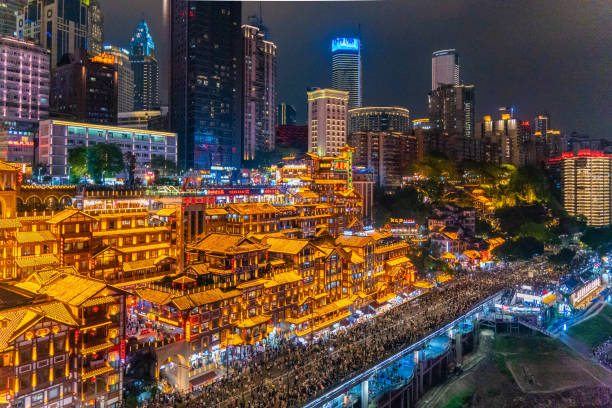
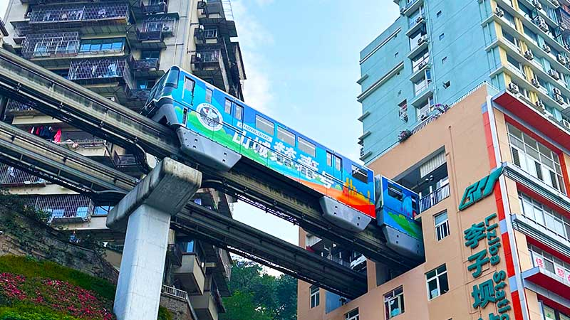
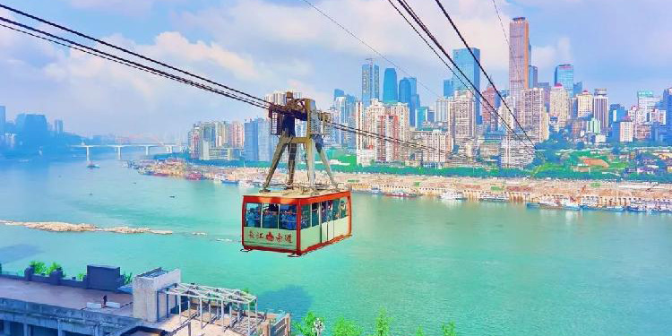
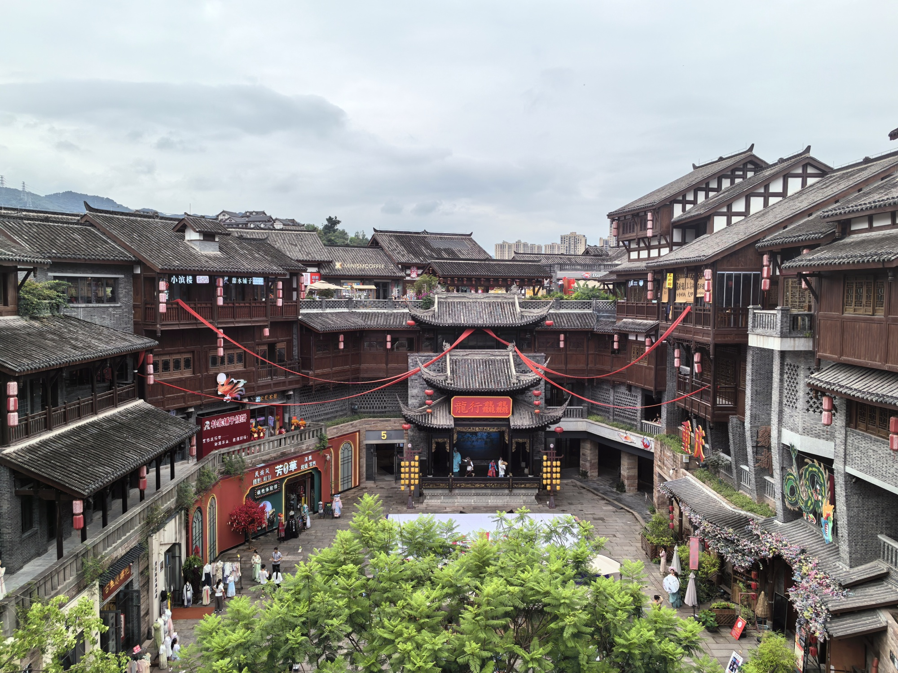
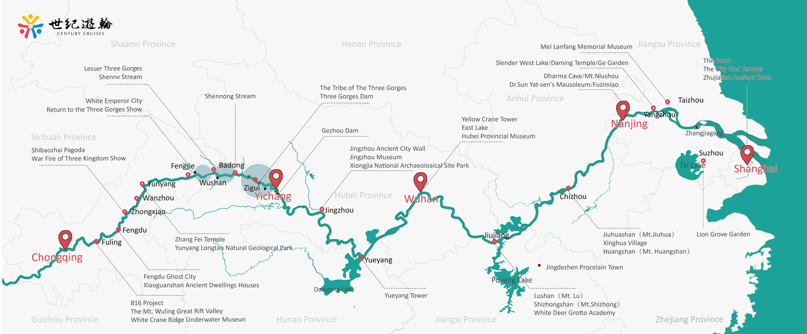

Chongqing

is one of China's most exciting mountain cities, often known as an “8D city” because of its complex, multi-level layout. Built across steep hills and rivers, the city features roads, bridges, and railways that twist and overlap in unexpected ways. It is famous for dramatic landscapes, bright night views, and spicy hot pot, but what makes Chongqing truly unique is how the city feels like a living maze. For many visitors, exploring Chongqing is not just about seeing the sights, but experiencing a dynamic blend of traditional culture and futuristic urban life.
Must-See Attractions
Hongya Cave
A famous riverside landmark with traditional-style buildings, glowing lights, restaurants, and beautiful night views.

Liziba Metro Station
A unique city scene where a metro train passes directly through a residential building.

Yangtze River Cableway
A classic Chongqing experience that carries visitors across the river with wide views of the city.

Ciqikou Ancient Town
A historic walking area with old streets, tea houses, snacks, and local crafts.
Chongqing and Yangtze River
